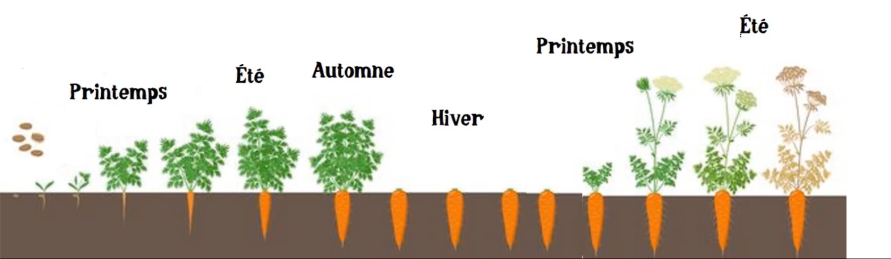

La carotte
Résumé des informations sur la carotte issues de la vidéo « La carotte de A à Z (ou presque) » de la chaîne Permaculture, agroécologie, etc.
Infos générales
On peut séparer les carottes en 2 catégories :
- Carottes primeur (dès février mars en serre et avril en extérieur) : à consommer au fur et à mesure (prévoir 3 rangs de 3 m pour 2 personnes),
- Carottes de conservation (de juin à août en extérieur) : à stocker tout l’hiver (prévoir 3 rangs de 20 m pour 2 personnes).
Idéalement, il faut un sol léger, drainé, sableux.
Variétés qui poussent dans les sols lourds (argileux) :
- Chantenay,
- De Colmar à cœur rouge,
- Demi-longue de Danvers,
- Géante rouge,
- Kuroda long.
On peut toujours améliorer le sol en y ajoutant du compost ou du terreau fins, ou encore en faisant de la culture sur butte.
Semis
- Tracer des sillons au marteau dans le sol (3 sillons sur 50cm de large pour éviter désherbage),
- Semer léger et éparse,
- Recouvrir de terreau fin,
- Humidifier à l’arrosoir en pluie,
- Remettre un paillage fin,
- Remouiller par-dessus.
Il faut entre 10 jours à 4 semaines pour que ça germe.
>Éclaircir pour en laisser une tous les 5 cm. Si elles ne sont pas abîmées, les repiquer ailleurs ou les manger. Si on n’éclaircit pas, on aura des bébés carottes.
Variétés
Carottes primeur (qui poussent précocement) :
- Amsterdam
- Demi-longue de Luc
- Marché de Paris
- Rouge sang
- Thumbelina
- De Guérande
- Demi-longue de Carentan
Juste après récolte, planter à l’emplacement des carottes des choux, laitues, poireaux pour l’automne.
Carottes de conservation (qui se conservent bien) :
- Autumn king
- Flakkee long red giant
- Gniff
- Jaune du Doubs
- Nantaise
- Rodelika
- Saint Valery
- Rothild
Pour les carottes de conservation, délimiter la zone de culture dans le jardin dès février, et y planter des fèves ou des radis ou des laitues. Quand la culture de fèves est terminée (vers juin, juillet), les faucher et les coucher au sol pour faire les semis de carottes de conservation.
Conservation
- Si l’hiver est doux, les laisser au jardin et cueillir au fur et à mesure des besoins.
- Si l’hiver est un peu rude, les laisser en terre, couper les fanes et couvrir d’un épais paillage.
- Si l’hiver est très froid et humide ou s’il y a des campagnoles, arracher les carottes, couper les fanes, nettoyer et stocker dans une cagette avec de la paille ou du sable à la cave (ne garder que les grosses pas abimées).
Consommer les fanes en soupe, en pesto, en tarte etc.
Production des semences
Carottes d’Occident : Plante bi annuelle, donc elles ne fleurissent que l’année suivante.
Garder les plus belles carottes qu’on avait conservées (20 environ) et les replanter le printemps suivant (dès mars pour éviter la pollinisation avec les carottes sauvages qui peut se faire jusqu’à 1 km !) pour qu’elles montent en fleurs et que l’on puisse récupérer les graines en septembre. Dans une serre c’est idéal, si elle est ouverte et peut attirer les insectes.
Comment les planter :
- Les enfoncer dans le sol en laissant dépasser du sol un centimètre de carotte,
- À moins de 10 cm les unes des autres,
- Tuteurer les fanes.
Quand les fleurs ont séché (fin septembre, octobre), récupérer les graines.
Faire une seule variété à la fois. D’une année sur l’autre, changer la variété. Les graines se conservent plus de 5 ans.
Parasite
La mouche de la carotte.
Pour l’éviter, planter des plantes aromatiques, poireaux, oignons, ail, ou échalote tout autour pour brouiller l’odeur.